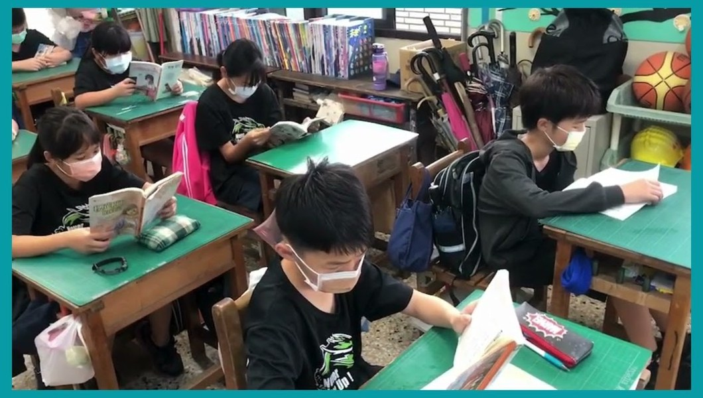
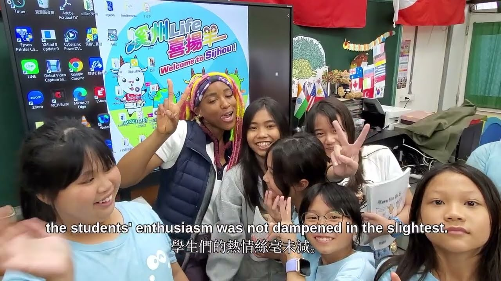

L
Learning
希望閱讀
Learning for Hopeful Reading — daily reading rituals from grade one, picture books in kindergarten, the school-wide LIFE Reading initiative, and the MOE Reading Foundation Award (2015).
Sijhou Elementary sits in Sijhou Township at the southern edge of Changhua County, on the alluvial plain just north of the Choshui River. Founded in June 1907 as a branch of Beidou Public School, the school became independent in 1917 and today serves the villages of Weicuo, Dongzhou, Jiumei, and parts of Sijhou and Wacuo — about 370 students across 16 main-stream and special-education classes.
溪州國小位於彰化縣南端的溪州鄉，在濁水溪沖積平原上。1907 年 6 月創校為「北斗公學校舊眉分校」，1917 年獨立設校。如今學區涵蓋尾厝村、東州村、舊眉村，以及溪州村、瓦厝村部分鄰里——全校約 370 位學生，普通班、特教班、資源班與巡迴班合計 16 班。
Our school is anchored by four interlocking values — Learning, International, Fancy, Ecology — and a small woolly mascot named Sijhou Sheep. In Sijhou's local culture, the sheep stands for gentleness and filial gratitude ("羊有跪乳之恩"). Joy, kindness, and quiet learning are the same single rhythm here.
我們以「L.I.F.E. 四大支柱」（希望閱讀、國際展望、想像創新、生態關懷）為校本軸線，並讓「喜揚羊」做我們的吉祥物。羊在溪州象徵溫馴與孝順（「羊有跪乳之恩」），把快樂、善良與安靜學習收在同一個節奏裡。
On the Sijhou campus, a 200-year-old camphor tree stands close beside a smaller juniper. Over the decades the two grew into one another — their trunks now meet at the base in a quiet V-shape, the older tree's crown sheltering the younger one. We call them the Teacher-Student Tree — the way a teacher stays close, casts shade, and lets the student grow toward the light. 校園裡有一棵 200 年的老樟樹，旁邊緊靠著一棵小羅漢松。多年來兩棵樹的樹幹底部慢慢相依，呈現 V 字共生——老樟為小羅漢松遮蔭護身，正像老師守護學生長大。我們把它命名為「師生樹」。
The two trees have stood through the 1959 August 7 Flood, Typhoon Wayne (1986), and every drought and storm Changhua has thrown at them. In 2021, the Futien Tree Conservation Foundation named our Teacher-Student Tree a national Most Beautiful Campus Tree (Distinguished), granting NT$50,000 for old-tree care. 這兩棵樹一起挺過 1959 年八七水災、1986 年韋恩颱風，以及彰化丟給它們的每一場乾旱與風雨。2021 年榮獲福田樹木保育基金會「全國最美校樹特優獎」，獲得 5 萬元老樹養護金。
Around the tree, our teachers and students wrote, rehearsed and staged a community play — "Thank You, Old Tree — All Those Years" — a quiet drama about why a hometown that grows trees also grows people. 圍繞著這兩棵樹，師生們自編自導自演了一齣社區舞台劇——《感謝那些年，大樹陪我們的日子》——讓守護老樹與善待社區成為一堂安靜的環境教育課。
A Sijhou education is built on four interlocking verbs: read, look outward, imagine, care for the earth.
溪州的校本課程由四個動詞組成：閱讀、放眼世界、發揮想像、守護土地。


Across the Pacific in Trinidad, California, our partner school's students sit in different classrooms, study in a different language, and walk under different trees — and yet, with us, they have built one shared picture book: "The Sheep and the Dragon." 在太平洋的另一端、美國加州的 Trinidad，姊妹校的孩子們在不一樣的教室、講不一樣的語言、走在不一樣的樹下——卻和我們一起做出了同一本繪本：《羊與龍的生活》。
The bilingual e-book — sheep on one side, dragon on the other, both written and drawn by elementary children — is a shared classroom, a shared joke, a shared rehearsal of what it feels like to read the world in two languages. Plus regular video exchanges with St. Mary's School (Philippines) on Filipino games, traditions, and SDGs. 這本雙語繪本，一邊是溪州孩子畫的羊，一邊是美國孩子畫的龍——是一間共享的教室、一場共享的玩笑、一次共同練習：用兩種語言讀世界是什麼感覺。我們也定期與菲律賓 St. Mary's School進行視訊交流，分享菲律賓遊戲、文化與 SDGs 議題。